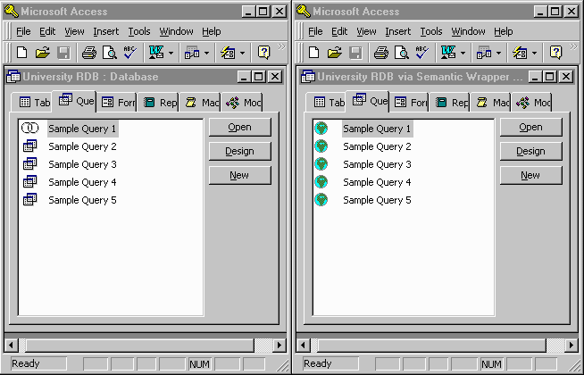

In the screenshot below, the left window shows the user
accessing a relational database called "University RDB" directly via MS
Access, while the right window shows the user accessing the same relational
database via Semantic Wrapper. The database "University RDB via Semantic
Wrapper" in the right window was created by linking tables in an equivalent
semantic schema using the Semantic ODBC driver that we developed at FIU's
High Performance Database Research Center.
| Home | Next |
